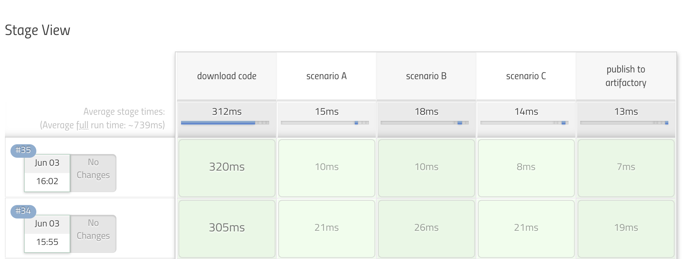

Table of Contents generated with DocToc
pipeline utility steps
findFiles
- jenkinsfile
sh "touch a.txt" def files = findFiles ( glob: "**/*.txt" ) println """ name : ${files[0].name} path : ${files[0].path} directory : ${files[0].directory} length : ${files[0].length} lastModified : ${files[0].lastModified} """ result
[Pipeline] sh (hide) + touch a.txt [Pipeline] findFiles [Pipeline] echo name : a.txt path : a.txt directory : false length : 0 lastModified : 1605525397000
send mail with catch error
try {
sh 'might fail'
mail subject: 'all well', to: 'admin@somewhere', body: 'All well.'
} catch (e) {
def w = new StringWriter()
e.printStackTrace(new PrintWriter(w))
mail subject: "failed with ${e.message}", to: 'admin@somewhere', body: "Failed: ${w}"
throw e
}
tips
java.io.NotSerializableException: groovy.lang.IntRange
refenrece:
caused via
(1..5).each { println it }solution
IntRange.flatten()(1..5).flatten().each { println it }IntRange.toList()(1..5).toList().each { println it }
Evaluate a Groovy source file into the Pipeline script
references:
load a constant
see also imarslo: groovy metaClass
groovy file ( constant.groovy )
@Field final Map<String, Map<String, String>> FOO = [
'k1' : [ 'k11' : 'v11' ],
'k2' : [ 'k21' : 'v21', 'k22' : 'v22' ]
]
Jenkinsfile
Object matrix = load( '/path/to/constant.groovy' )
if ( matrix.metaClass.hasProperty(matrix, 'FOO') ) {
println """
matrix.FOO : ${matrix.FOO}
matrix.FOO.k1 : ${matrix.FOO.k1}
matrix.type : ${matrix.metaClass.hasProperty(matrix, 'FOO').type}
"""
}
- result
matrix.FOO : [k1:[k11:v11], k2:[k21:v21, k22:v22]] matrix.FOO.k1 : [k11:v11] matrix.type : interface java.util.Map
extend the pipeline
groovy script ( builtInStage.groovy )
String str = "this is string A"
def stageA( String path ) {
stage('scenario A') { println path }
}
def stageB() {
stage('scenario B') { println str }
}
def stageC() {
stage('scenario C') {
String strC = "this is string C"
sh "echo ${strC}"
println strC
}
}
def runAllStages( String basePath ) {
stageA( basePath )
stageB()
stageC()
}
return this
jenkinsfile
node('master') {
stage( 'download code' ) {
echo 'prepare'
sh "cat ${WORKSPACE}/builtInStage.groovy"
}
test = load "builtInStage.groovy"
test.runAllStages( "${WORKSPACE}/mypath" )
stage( 'publish' ) {
echo 'done!'
}
}
- stage view 
timeout
sample jenkins pipeline
import jenkins.model.CauseOfInterruption
import org.jenkinsci.plugins.workflow.steps.TimeoutStepExecution
stage( 'wating' ) {
catchError( buildResult: 'SUCCESS', stageResult: 'ABORTED' ) {
try {
timeout( time: 5, unit: 'SECONDS' ) { sleep( time: 10, unit: 'SECONDS' ) }
} catch ( org.jenkinsci.plugins.workflow.steps.FlowInterruptedException e ) {
String msg
if ( e.causes[0] instanceof TimeoutStepExecution.ExceededTimeout ) {
msg = 'NOT_BUILT: aborted by timeout'
currentBuild.result = 'NOT_BUILT'
} else if ( e.causes[0] instanceof CauseOfInterruption.UserInterruption ) {
User user = e.causes[0]?.user
println "${user.fullName} : ${user.absoluteUrl}"
msg = "ABORTED : by user : ${user.displayName} [ ${user.id} ]"
currentBuild.result = 'ABORTED'
}
println "${msg}"
currentBuild.description = msg
} catch ( Throwable e ) {
def sw = new StringWriter()
e.printStackTrace(new PrintWriter(sw))
println sw.toString()
throw e
} // try | catch
} // catchError
} // stage
get previous build abort
[!TIP]
- see also iMarslo : get builds abort cause
// jenksinfile
println libs.isTimeout( env.JOB_NAME, currentBuild.previousBuild.number )
// libs.groovy
Boolean isTimeout( String name, int nubmer ) {
Jenkins.instance
.getItemByFullName( name )
.getBuildByNumber( nubmer )
.getActions( jenkins.model.InterruptedBuildAction.class )
.causes
.flatten()
.any{ it instanceof TimeoutStepExecution.ExceededTimeout }
}
DSL
original DSL:
cleanWs(
deleteDirs: true,
disableDeferredWipeout: true,
notFailBuild: true,
patterns: [
[ pattern: 'b.txt', type: 'INCLUDE' ] ,
[ pattern: 'a.txt', type: 'INCLUDE' ]
]
)
-
List p = [ 'a.txt', 'b.txt' ] cleanWs( deleteDirs: true, disableDeferredWipeout: true, notFailBuild: true, patterns: [ *p.collect { [pattern: "${it}", type: 'INCLUDE'] } ] ) List.collectList p = [ 'a.txt', 'b.txt' ] cleanWs( deleteDirs: true, disableDeferredWipeout: true, notFailBuild: true, patterns: p.collect { [pattern: "${it}", type: 'INCLUDE'] } )with API
import hudson.plugins.ws_cleanup.Pattern import hudson.plugins.ws_cleanup.Pattern.PatternType List p = [ 'a.txt', 'b.txt' ] cleanWs( deleteDirs: true, disableDeferredWipeout: true, notFailBuild: true, patterns: p.collect { new Pattern(it, PatternType.INCLUDE) } )with pure API
Javadoc:
- hudson.plugins.ws_cleanup.WsCleanup
- hudson.plugins.ws_cleanup.Pattern
- hudson.plugins.ws_cleanup.Pattern.PatternType
- FilePath
- Launcher
- TaskListener
get
FilePath:import hudson.plugins.ws_cleanup.WsCleanup import hudson.plugins.ws_cleanup.Pattern import hudson.plugins.ws_cleanup.Pattern.PatternType List p = [ 'a.txt', 'b.txt' ] WsCleanup wsc = new WsCleanup() wsc.setDeleteDirs(true) wsc.setDisableDeferredWipeout(true) wsc.setNotFailBuild(true) wsc.setPatterns( p.each { new Pattern( it, PatternType.INCLUDE ) } ) // unresolved wsc.perform( currentBuild.rawBuild, <FilePath>, <Launcher>, <TaskListener> )
others
handle api
import groovy.json.JsonSlurper
String username = System.getenv('GITHUB_USERNAME')
String password = System.getenv('GITHUB_PASSWORD')
String GITHUB_API = 'https://api.github.com/repos'
String repo = 'groovy'
String PR_ID = '2' // Pull request ID
String url = "${GITHUB_API}/${username}/${repo}/pulls/${PR_ID}"
println "Querying ${url}"
def text = url.toURL().getText(requestProperties: ['Authorization': "token ${password}"])
def json = new JsonSlurper().parseText(text)
def bodyText = json.body
// Check if Pull Request body has certain text
if ( bodyText.find('Safari') ) {
println 'Found Safari user'
}
running in temporaray folders
using
pwd(temp:true)node ( 'built-in' ) { dir( pwd('tmp':true) ) { sh """ pwd ls -altrh """ } //dir } // node- console output
16:13:46 + pwd 16:13:46 /home/devops/workspace/marslo/sandbox/func@tmp 16:13:46 + ls -altrh 16:13:46 total 0 16:13:46 drwxr-xr-x 4 devops devops 42 Jul 13 08:13 .. 16:13:46 drwxr-xr-x 3 devops devops 19 Jul 13 08:13 .
- console output
using
System.currentTimeMillis()node ( 'built-in' ) { dir( System.currentTimeMillis().toString() ) { sh """ pwd ls -altrh """ } //dir } // node- console output
16:26:14 + pwd 16:26:14 /home/devops/workspace/marslo/sandbox/func/1657700773771 16:26:14 + ls -altrh 16:26:14 total 0 16:26:14 drwxr-xr-x 2 devops devops 6 Jul 13 08:26 . 16:26:14 drwxr-xr-x 4 devops devops 52 Jul 13 08:26 ..
- console output
check git branch exists in local repo
/**
* check whether if the git refs exists in local repo or not
*
* @param name the git base references, can be branch name or revision or tag or pointer refs ( i.e. {@code HEAD}, {@code FETCH_HEAD}, ... )
* @param type the references type. can be {@code [ heads | tags | refs ]}. revision will be considered as {@code refs}
* @param dir the local repo location. using current directory by default
* @param verbose whether or not to show debug information
**/
Boolean hasLocalReference( String name ,
String type = 'refs' ,
String dir = pwd() ,
Boolean verbose = true
) {
if ( ! [ 'heads', 'tags', 'refs' ].contains(type) ) println( "ERROR: invalid type ! available type : 'heads', 'tags' or 'refs'" )
if ( verbose ) println ( "~~> check whether if ${type} : '${name}' exists in local repository : '${dir}'" )
String refs = [ 'heads', 'tags' ].contains(type) ? "refs/${type}/${name}" : name
sh ( returnStatus : true ,
script : """
set -x ;
[ -d "${dir}" ] && \
git -C "${dir}" rev-parse --is-inside-work-tree >/dev/null 2>&1 && \
git -C "${dir}" cat-file -e ${refs}
"""
) == 0
}
- or via
show-ref/** * check whether if the branch exists in local repository * * @param name the branch name will be checked * @param type to using {@code refs/${type}} to check branch or tags in local * @param dir the local repo location. using current directory by default * @param verbose whether or not to show debug information **/ Boolean hasLocalBranch ( String name , String type , String dir = pwd() , Boolean verbose = true ) { if ( ! [ 'heads', 'tags' ].contains(type) ) util.showError( "ERROR: invalid type! available type : 'heads' or 'tags'" ) if ( verbose ) color.echo( LOGGER_COLOR, "~~> check whether if ${refName(type)} : '${name}' exists in local repository : '${dir}'" ) sh ( returnStatus : true , script : """ set +x; [ -d "${dir}" ] && \ git -C "${dir}" rev-parse --is-inside-work-tree >/dev/null 2>&1 && \ git -C '${dir}' show-ref --quiet refs/${type}/${name} """ ) == 0 } // hasLocalBranch
withCredentials
references:
- JENKINS-47514 : Special characters in password are not escaped properly in git plugin's withCredentials Both
gitUsernamePasswordandgitSshPrivateKeybindings depend on the Credential Plugin to retrieve user’s credential using the Credentials API. Git SSH Private Key Binding The gitSshPrivateKey implementation provides git authentication support over SSH protocol using private key and passphrase credentials of a user. The binding uses two git specific environment variables depending upon the minimum CLI-git versionGIT_SSH_COMMAND- If version is greater than or equal to 2.3, then the GIT_SSH_COMMAND environment variable provides the ssh command including necessary options which are: path to the private key and host key checking, to authenticate and connect to the git server without using an executable script.SSH_ASKPASS- If version is less than 2.3, an executable script is attached to the variable which provides the ssh command including necessary options which are: path to the private key and host key checking, to authenticate and connect to the git server
push with ssh private credentials
references:
- Git Credentials Binding for sh, bat, powershell
- Git credentials binding for sh, bat, and powershell
- Is it possible to Git merge / push using Jenkins pipeline
- Pipeline - Equivalent to Git Publisher
- Git from Jenkins pipeline is using wrong SSH private key to push back into Git repository
- Credentials Binding Plugin
for username & password by
gitUsernamePassword:withCredentials([ gitUsernamePassword( credentialsId: 'my-credentials-id', gitToolName: 'git-tool' ) ]) { bat 'git submodule update --init --recursive' }
[!NOTE] If for any particular reason, the push must be done using a different method the URL needs to be configured accordingly:
git config url.git@github.com/.insteadOf https://github.com/: if the checkout was done through HTTPS but push must be done using SSHgit config url.https://github.com/.insteadOf git@github.com/: if the checkout was done through SSH but push must be done using HTTPS escaping characters in the ECHO commands of the askpass script:.replace("%", "%%") .replace("^", "^^") .replace("&", "^&") .replace("<", "^<") .replace(">", "^>") .replace("|", "^|") .replace("'", "^'") .replace("`", "^`") .replace(",", "^,") .replace(";", "^;") .replace("=", "^=") .replace("(", "^(") .replace(")", "^)") .replace("!", "^!") .replace("\"", "^\"")
withCredentials([ sshUserPrivateKey(
credentialsId : 'GITSSHPRIVATEKEY',
keyFileVariable : 'SSHKEY',
usernameVariable : 'USERNAME'
)
]) {
sh """
GIT_SSH_COMMAND="ssh -i ${SSHKEY} -o User=${USERNAME} -o StrictHostKeyChecking=no" \
git ls-remote <repoUrl> --heads \
git push origin <local-branch>:<remote-branch>
"""
}
or
def withSSHCredential( String credential, Boolean verbose = true ) { [ run : { command -> if ( verbose ) println ( "~~> run '${command}' with credential ${credential} :" ) withCredentials([ sshUserPrivateKey( credentialsId : credentialsId , keyFileVariable : 'SSHKEY' , usernameVariable : 'USERNAME' ) ]) { String sshCommand = "GIT_SSH_COMMAND=\"ssh -i '${SSHKEY}' " + "-l '${USERNAME}' " + "-o StrictHostKeyChecking=no" + '"' sh ( returnStatus : true , script : """ set +x -e ; ${sshCommand} ${command} """ ) == 0 } // sshUserPrivateKey } // run ] } // withCredential // withSSHCredential( 'credentialID' ).run( 'git ls-remote git@github.com:sample/repo.git' )
ssh-agent(https://plugins.jenkins.io/ssh-agent)
- sample code
steps { sshagent (credentials: ['jenkins-generated-ssh-key']) { sh(""" git tag ${props['DATE_TAG']} git push --tags """) } }
code clone
String repo = 'https://github.com/sample-code'
String branch = 'develop'
String refsepc = "+refs/heads/${branch}:/remotes/origin/${branch}"
String revision = 'abcdefg' // or 'HEAD'
try {
checkout([
$class: 'GitSCM',
branches: [[ name: revision ]],
extensions: [
[
$class : 'CloneOption',
honorRefspec : true,
noTags : false,
reference : '',
shallow : false
],
[
$class : 'AuthorInChangelog'
]
],
userRemoteConfigs: [[
credentialsId : <credential_id> ,
refspec : branch ,
url : repo
]]
])
} catch ( Exception e ) {
def sw = new StringWriter()
e.printStackTrace( new PrintWriter(sw) )
echo sw.toString()
if ( e instanceof java.lang.NullPointerException ) {
error ( "${repo} CANNOT be found !")
} else if ( e instanceof hudson.AbortException ) {
println ( "failed to clone repo ${repo}\n${e.message}" )
if ( 'determineRevisionToBuild' == e.stackTrace.collect { it.methodName }.first() ) {
error ( "'${revision}' cannot be found in refs : '${branch}' ! provide correct revision number or branch name." + "<br>${e.message}" )
}
if ( 'retrieveChanges' == e.stackTrace.collect { it.methodName }.first() ) {
error ( "'${branch}' or '${revision}' cannot be found in ${repo} !<br>${e.message}" )
}
}
throw e
}